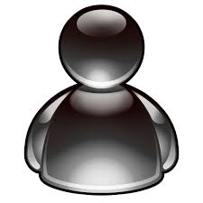

O que foi o Frutiger Aero?
Por: Desconhecido
O Frutiger Aero foi um movimento de design visual e de interface que dominou a cultura digital entre 2004 e 2013. Ele sucedeu o estilo Y2K e se caracterizou por uma visão extremamente otimista do futuro, mesclando tecnologia de ponta com elementos naturais, transparências e muito brilho.